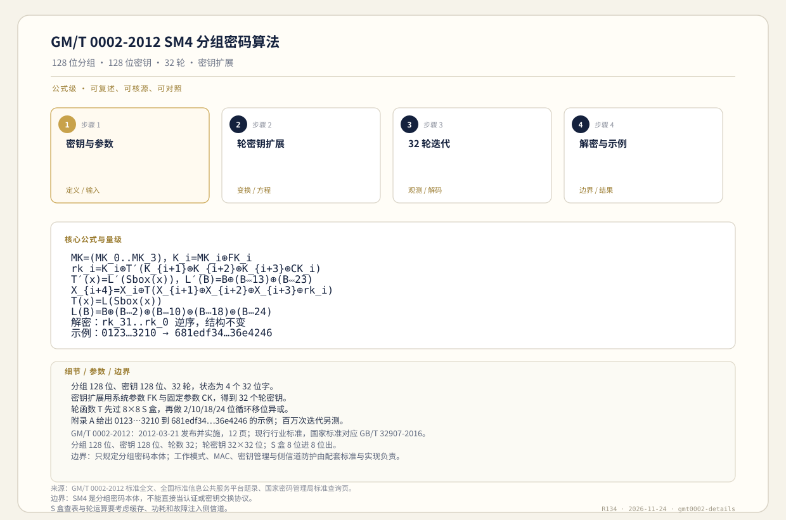
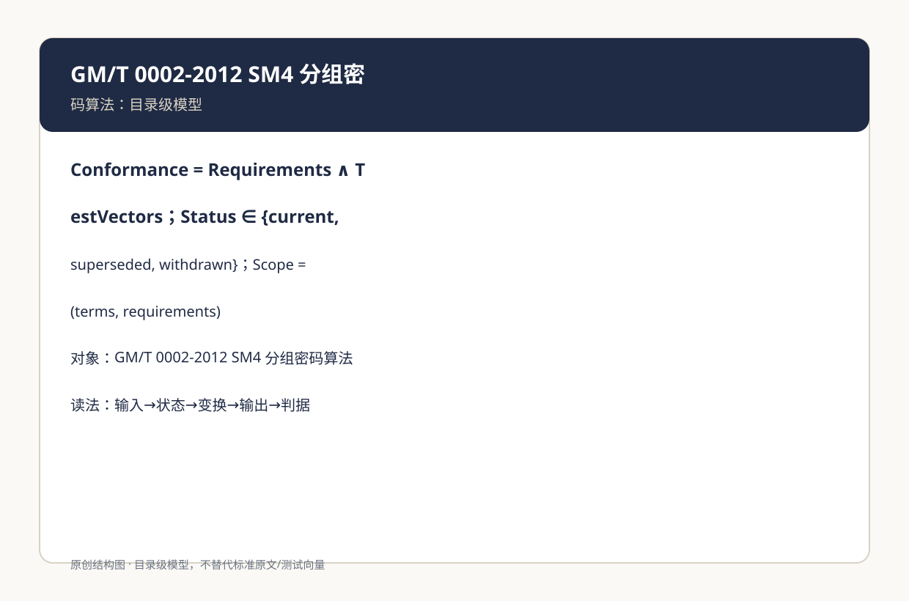

原理与机制
标准：GM/T 0002-2012 SM4 分组密码算法（GM/T 0002-2012 SM4 Block Cipher Algorithm）。GM/T 0002-2012 把 SM4 写成一条 128 位分组、128 位密钥、32 轮的迭代结构。密钥 MK 先拆成 MK0..MK3，与系统参数 FK 异或成 K0..K3；每一轮用 K_i、K_{i+1}、K_{i+2}、K_{i+3} 与固定参数 CK_i 过 T′，得到 rk_i=K_{i+4}。加密状态 X0..X3 取自明文，第 i 轮计算 X_{i+4}=X_i⊕T(X_{i+1}⊕X_{i+2}⊕X_{i+3}⊕rk_i)。T 先做 8×8 S 盒替换，再做 2/10/18/24 位循环移位的线性异或；32 轮后输出 X35..X32，逆序拼回密文。解密不换 S 盒，只把 rk_0..rk_31 逆序送入同一结构。

为什么重要
SM4 是国密对称密码的基础积木：TLCP、IPSec、密码模块和大量行业标准都引用它。把轮函数、密钥扩展和测试向量写清，读者才能判断一个实现是否真的按 GM/T 0002 运行，而不是只看到一个“支持 SM4”的标签。标准卡与算法百科卡的分界也在这里：该条目给标准号、轮数、参量和附录 A 示例，不把工作模式、MAC 或密钥管理混进分组密码本体；这些由 GB/T 15852.1、GB/T 38636 或具体协议承担。
应用与实例
实现时先固定 4 个 32 位字的状态和 32 个轮密钥，再按 T′ 逐轮生成 rk。检查顺序建议是：MK/FK/CK 常量是否正确，rk_0 是否等于 f12186f9，第一组明文是否得到 681edf34d206965e86b3e94f536e4246，最后再跑百万次迭代示例。分组密码只负责一块 128 位数据的置换；多块数据要选 CBC、CTR、GCM 等工作模式，认证要另接 MAC 或 AEAD。不要用“SM4 加密”替代完整协议，也不要把密钥直接当口令。

边界与攻击面
SM4 的 S 盒查表、循环移位和轮密钥加载都可能泄露缓存、功耗、电磁或故障信息；智能卡、嵌入式设备和共享 CPU 上要配合掩码、随机化与常量时间实现。分组密码本体不提供完整性、重放防护或身份认证；CBC 填充错误、CTR nonce 复用、GCM 认证失败处理不当都会绕过算法本身的安全边界。密钥长度固定 128 位，不能靠加长口令弥补弱密钥。
历史与背景
SM4 的前身 SMS4 于 2006 年 1 月解密公开，最初用于 WAPI；2012-03-21 国家密码管理局发布 GM/T 0002-2012，正式改名 SM4 并给出算法结构、密钥扩展和两组运算示例。2016 年发布国家标准 GB/T 32907-2016，2021 年 SM4 进入 ISO/IEC 18033-3 修正案；行业标准与国家标准的轮函数、密钥扩展和测试向量保持一致，差别主要在标准层级、引用体系与发布机构。
技术参数与复算边界
该条目的形式模型是 (S=\min_i S_i,\quad S_i\in{\text{密钥强度},\text{分组安全},\text{实现安全}})。输入：输入：GM/T 0002-2012 SM4 分组密码算法的公开参数、密钥/随机数与消息；变量说明：S 为综合安全强度；各分量取最小值，不能只看密钥位数。 预期输出：按 GM/T 0002-2012 SM4 分组密码算法 的规范执行后得到可验证的输出或可比较的优势界。 复算必须给出输入、步骤、输出和单位；示例只演示流程，不替代标准测试向量。
复杂度由密钥长度、分组/状态规模、轮数、随机数质量和敌手模型共同决定；参数越界、版本差异与实现侧信道都可能使公式结论失效。已登记限制：该条目只给出形式模型与可复算步骤，不声称已完成生产实现、侧信道认证或第三方安全评估。
参数与状态规模
公式 (S=\min_i S_i,\quad S_i\in{\text{密钥强度},\text{分组安全},\text{实现安全}}) 的输入、输出和单位必须逐项登记；复算顺序为：1. 读取标准规定的密钥/分组/模式参数 2. 按标准表换算等效强度 3. 取最弱分量作为系统强度。
状态规模、密钥长度、分组长度和轮数决定复杂度；这些量不能从标题推断，必须以标准或实现文档为准。
逐步示例与核验
形式模型与复算步骤
[S=\min_i S_i,\quad S_i\in{\text{密钥强度},\text{分组安全},\text{实现安全}}]
GM/T 0002-2012 SM4 分组密码算法的公开参数、密钥/随机数与消息；变量说明：S 为综合安全强度；各分量取最小值，不能只看密钥位数。1.读取标准规定的密钥/分组/模式参数。2.按标准表换算等效强度。3.取最弱分量作为系统强度。边界：公式只覆盖已登记的参数与假设；参数取值、标准版本和实现细节仍以来源为准。
参考出处
- Wikipedia search entry for GM/T 0002-2012 SM4 分组密码算法. https://zh.wikipedia.org/w/index.php?search=GM%2FT%200002-2012%20SM4%20%E5%88%86%E7%BB%84%E5%AF%86%E7%A0%81%E7%AE%97%E6%B3%95
- Handbook of Applied Cryptography (Menezes, van Oorschot, Vanstone). https://www.cacr.math.uwaterloo.ca/hac/